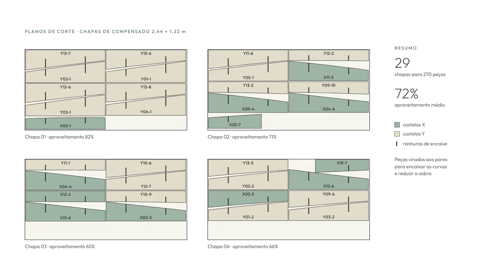
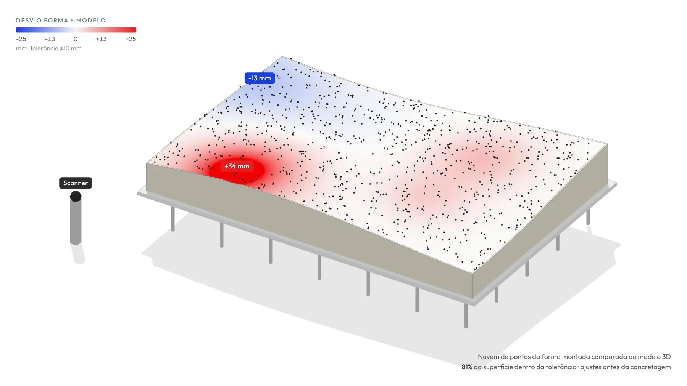

Fabricação digital
Do modelo à peça cortada.
Formas, moldes, mobiliário e elementos construtivos desenhados para CNC, corte a laser e impressão 3D. Cada peça racionalizada, numerada e encaixada, com mapas de montagem que facilitam o processo na obra.
Seis frentes de trabalho.
Cada frente pode ser contratada sozinha ou combinada com as outras.
Formas e moldes em costelas
Lajes e superfícies curvas moldadas em formas de compensado cortadas em CNC, numeradas para montar como um quebra-cabeça.
Encaixes paramétricos
Juntas que travam sem parafuso, com folga calibrada para o material e para a máquina.
Plano de corte e nesting
Mais peças por chapa, menos sobra e lotes de corte organizados por etapa da obra.
Arquivos prontos para máquina
DXF para CNC e laser, arquivos para impressão 3D e trajetórias para braço robótico.
Mobiliário e protótipos
Peças únicas e séries curtas, do modelo paramétrico ao protótipo físico.
Conferência por escaneamento 3D
Nuvem de pontos comparada ao modelo para achar desvios antes de concretar.
Exemplos.
Imagens produzidas pela BRD. As marcadas como Projeto BRD são de projetos reais; as demais usam modelos ilustrativos.




Quer aplicar isso no seu projeto?
Mande o que você tem, mesmo que seja só uma ideia ou um arquivo de estudo. Respondemos com uma proposta de escopo.